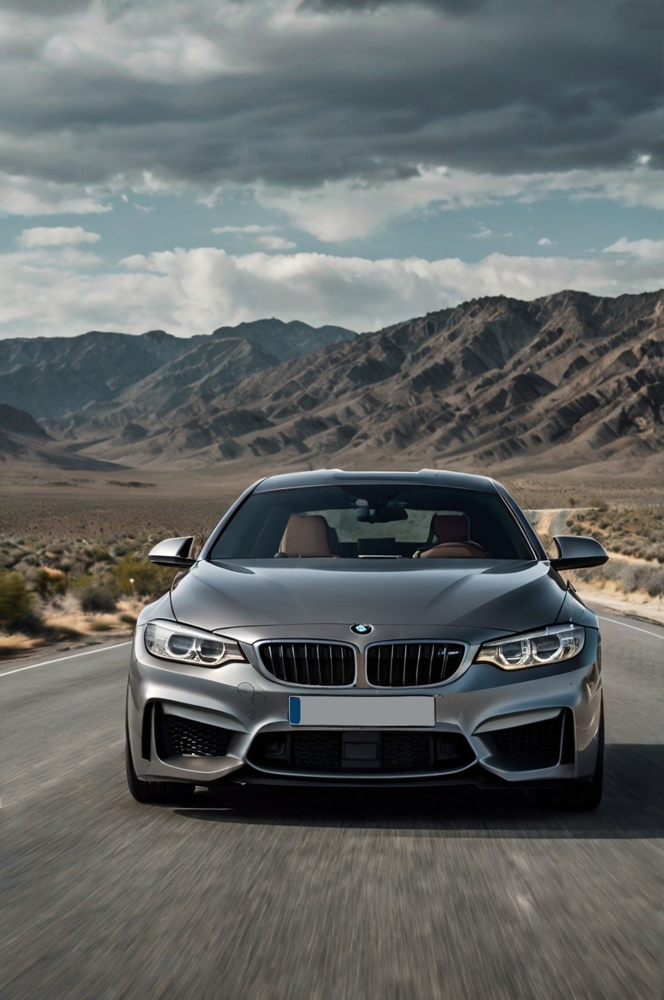

BMW
ALPINA
BMW-M
BMW i
forsätt läsa...
BMW Service
Bo-Jimmy Bilservice är en fristående BMW-specialist med över 30 års erfarenhet. Vi har samlat på oss djup kunskap och specialverktyg för BMW-modeller från 80-talet och framåt. Utöver standardservice erbjuder vi avancerad service för hela drivlinan, inklusive växellåda, fördelningslåda och differentialer, för att säkerställa att din bil håller i många mil. Vårt mål är att din BMW ska behålla känslan av en ny bil och ge dig den körglädje som är kärnan i BMW-upplevelsen. Välj oss för professionell service och långvarig kvalitet!
På Bo-Jimmy Bilservice utför vi alla typer av arbeten på din BMW – från kamkedjebyte och topplocksrenoveringar till renovering av fram- och bakvagn, samt mindre service. Vi använder endast originaldelar eller delar som motsvarar originalkvalitet. När det gäller oljor har vi valt Motul – en av marknadens bästa.
ALPINA Service
Som fristående BMW-verkstad har Bo-Jimmy Bilservice lång erfarenhet av att serva och reparera de exklusiva Alpina-bilarna. Alpina, en förädlad version av BMW, kräver expertkunskap – och det är precis vad vi har samlat på oss genom åren. Eftersom dessa bilar är ovanliga och unika, kan du känna dig trygg med att vi har den erfarenhet och kompetens som krävs. Tveka inte att låta oss ta hand om din Alpina – vi vet hur man bevarar dess prestanda och exklusivitet!
BMW-M Service
Bo-Jimmy Bilservice är experter på att serva och reparera BMW M-bilar enligt tillverkarens noggrant angivna instruktioner. Dessa bilar, som i princip är tävlingsbilar för gatan, är tekniskt avancerade och fungerar som ett mekaniskt urverk. Eftersom M-bilar ofta körs hårt eller på bana, erbjuder vi extra service för att bevara deras prestanda. Vi servar växellåda, fördelningslåda, differentialer och utför tvättning och kontroll av kylkanaler för både motor och bromsar. Vi använder endast tillverkarens diagnos- och mjukvaruuppdateringar, samt elektronisk servicebok för både bilen och tillverkarens server. För oljor har vi valt det bästa – Motul eller original. Välj oss för expertservice och maximal prestanda!
BMW i Service
På Bo-Jimmy Bilservice är vi stolta över att ha utbildad personal inom högvoltssystem och godkänd skyddsutrustning. Vi följer enbart originaltillverkarens instruktioner och erbjuder alla typer av reparationer för elbilar, förutom cellbyten i HV-batterier. Eftersom elbilar sällan kräver service är det extra viktigt att genomföra regelbundna fordonskontroller. Med hög prestanda och vikt kan många komponenter slitas snabbare, vilket kan påverka bilens prestanda. Däckförbrukningen är också högre på elbilar, så vi ser till att kontrollera både hjulinställning och däckens skick. Välj oss för en noggrann kontroll och bibehållen toppprestanda!
MINI
forsätt läsa...
MINI
Text placeholder
TESLA
forsätt läsa...
TESLA
På Bo-Jimmy Bilservice har vi lyssnat på våra kunder och har nu tagit steget att bli fristående Tesla-reparatörer! Med vår expertis och passion för innovation erbjuder vi service och reparationer för Tesla-bilar, och vi använder endast originaldelar och Teslas egna toolbox-verktyg. Vi följer tillverkarens exakta anvisningar för att säkerställa att din Tesla får den bästa möjliga vård. Välj oss för professionell och pålitlig service – för att hålla din Tesla i toppform!
VOLKSWAGEN
AUDI RS
forsätt läsa...
VAG
År 2012 beslutade grundarna av Bo-Jimmy Bilservice att bredda sin expertis och erbjuda service för fler tyska bilmärken, och valde att specialisera sig på VAG-koncernerna VW och Audi. Som fristående verkstad utför vi all service och alla typer av reparationer – förutom lack och plåt. Vi digitaliserar alltid din servicebok i tillverkarens originaldatabas för att säkerställa fullständig dokumentation. För att ge din bil bästa möjliga vård använder vi endast originaldelar eller delar av motsvarande kvalitet, och vi har valt Motul för att ge din bil den bästa oljan. Välj oss för pålitlig, högkvalitativ service som håller din VW eller Audi i toppskick!
AUDI RS
Kör du en Audi RS-modell? Då har du kommit rätt! På Bo-Jimmy Bilservice har vi lång erfarenhet av dessa prestandabilar och erbjuder service och reparationer enligt tillverkarens exakta specifikationer. Med vår gedigna bakgrund i att serva BMW M-bilar har vi både kunskap och känsla för sport- och tävlingsbilar där precision är allt. Vi säkerställer att alla servicar registreras digitalt i tillverkarens originalserviceplan och använder enbart originaldelar eller delar av motsvarande kvalitet. Välj oss för en expertvård som matchar din Audis höga prestanda!